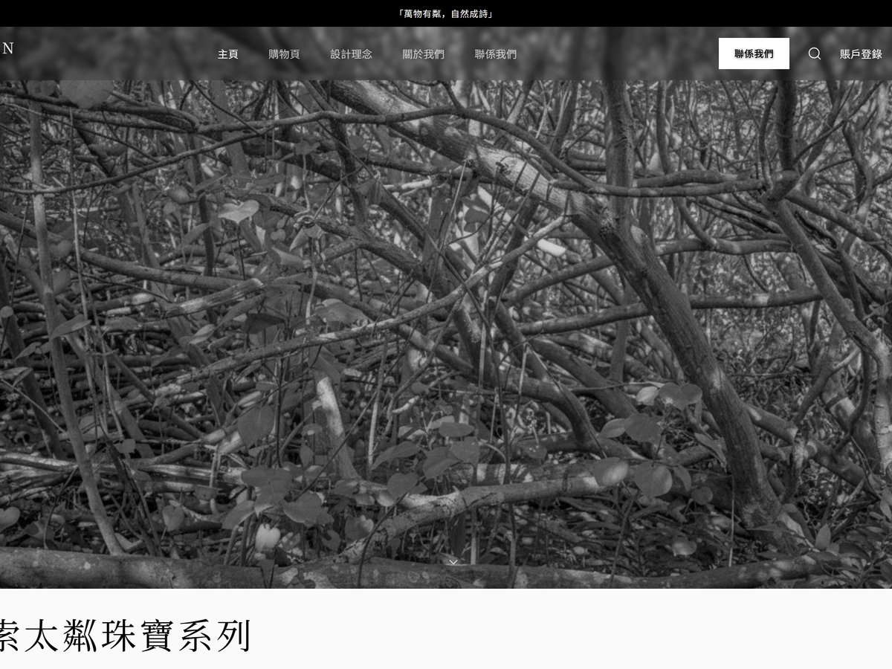

NEW
Rift 便携蓝牙音箱 独立设计项目 · 概念至 CMF
以"斜切分割"为核心设计语言，打破圆柱体音箱的视觉单调。Kvadrat 声学织物 × 阳极氧化铝两种材质沿斜切线对峙——既定义了视觉身份，又自然划分了声学功能区。
- 完整设计流程：用户研究 → 市场分析 → 概念发散 → CMF 定义 → 结构设计
- Rhino 7 建模 + KeyShot 渲染 + 爆炸视图结构分解
我是金承旭，澳门科技大学产品设计大三学生。我相信好的设计存在于代码与实物的交汇处——既能用 Rhino 建模复杂曲面、3D 打印验证原型，也能写 React 把交互想法变成可点击的 Demo。
多年 3A 游戏玩家经历让我对交互体验有近乎偏执的敏感——一个按钮的反馈延迟、一个转场的缓动曲线、一个悬停的阴影变化，我都会注意到。这种敏感正在转化为我的 UI 设计能力。
目前寻找产品设计 / UI-UX 方向实习，Base 澳门/大湾区。
澳门科技大学
产品设计 · 本科在读
2023.09 — 2027.06
2026
澳门科技大学优秀学生奖
以"斜切分割"为核心设计语言，打破圆柱体音箱的视觉单调。Kvadrat 声学织物 × 阳极氧化铝两种材质沿斜切线对峙——既定义了视觉身份，又自然划分了声学功能区。
Stable Diffusion 驱动的 UX 设计流程——从 AI 视觉方向探索（6 组概念 2 天完成）到 Prompt 工程设计资产，最终落地为完整高保真原型。展示 AI 如何在 UX 流程中加速"探索-筛选-决策"循环。
科幻竞技场游戏完整UI设计语言系统，6大核心界面。NanoBanana2 AI 生成8位英雄角色原画 + 战斗场景背景。React 18 + Framer Motion 实现 AnimatePresence 页面转场、Spring 3D卡片、Canvas粒子、实时HUD模拟。桌面端 + 平板双断点响应式适配。
澳门高校宿舍人均面积不足 4㎡，传统收纳无法适应学生"学习-睡眠-社交"多场景切换需求。联合室内设计 + 软件工程同学，设计模块化收纳产品 + 微信小程序。我负责主持用户访谈、产品外观与 CMF 设计、小程序全部 UI 界面。

与同学联合创立的独立陶瓷首饰品牌，我主导品牌官网全部 UI 设计与前端 MVP 落地。黑白植物影像构建 Hero Section 主视觉，商品图默认黑白处理，Hover 渐变过渡至原始彩色——增强探索感与视觉惊喜。
从《黑豹2》《头号玩家》电影道具调研出发，发现 VR 设备"地面限制"导致的沉浸感断层，将空中悬浮体感定义为核心体验目标。运用 AI 生图完成外骨骼概念发散，收敛至磁吸+绳索轻量化方案；Rhino 7 建模复杂曲面并 3D 打印验证人机尺度。
景区实地观察发现"弃椅选花坛"现象——游客宁坐花坛边缘也不使用公共座椅。定位贴墙座椅缺乏景观互动与社交属性的核心痛点。改造前：面壁式布局，单人孤坐。改造后：罗马柱式单人椅实现人车分流，景观长椅满足并排观景；Rhino 全尺寸建模，1:7 白膜验证结构比例。
深入研究汉代虎形艺术造型语言，提炼力量美学与精神内核，将汉代虎形意象转化为当代陶瓷狮塑。作品入选澳大利亚 Anlan Museum 公开展览，作为东方传统文化当代诠释代表作面向国际观众展出。
以个人健身数据驱动的交互式仪表盘：SVG 实时 BMI 半圆仪表、12周减重趋势预测、健身环动作燃脂效率排行榜、周训练计划可视化。纯 CSS 暗色主题，从需求对话到线上部署全程 Vibe Coding。
运用 Claude Code、Midjourney、Stable Diffusion 等 AI 工具链，独立完成 4 个线上可交互项目的完整开发与部署。覆盖游戏 UI 设计系统（React + Framer Motion）、品牌官网（设计规范 + 用户旅程）、个人健康数据追踪面板（Vite + CI/CD 自动部署）。掌握 Vibe Coding 完整工作流：需求分析 → AI 协作编码 → 版本控制 → 线上部署，设计到代码零延迟。
协助导师策划执行双年展全流程，从零搭建展台设计：以报纸为原材料手工打造沉船装置作为展厅视觉中心，统筹场地布置与空间叙事。
负责跨部门资源协调与现场执行，培养突发状况快速响应能力与团队协作意识。
熟练使用 Midjourney、NanoBanana2 等 AI 生图工具，擅长视觉类 Prompt 创作、概念发散与多方案快速验证。AI 融入设计全流程。
用户洞察 → 需求定义 → 概念发散 → 方案收敛 → 原型验证。注重从真实用户场景出发，将洞察转化为可验证的设计方案。
Rhino 7 复杂曲面与完整外观建模；KeyShot 产品级渲染；3D 打印快速原型验证。从数字模型到实体原型的全链路能力。
完整网页 UI 设计规范搭建，用户旅程设计，交互流程规划。具备 React/TypeScript 编码能力，设计到代码无缝衔接，2个项目线上可交互。
🎮 3A 游戏多年重度玩家，对交互体验与视觉设计有敏锐直觉
澳门科技大学产品设计专业大三，寻找产品设计 / UI/UX 方向实习。
Base 澳门 · 大湾区，可远程。